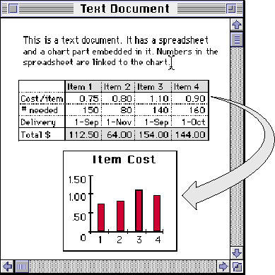
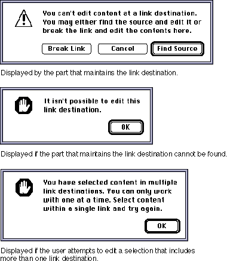
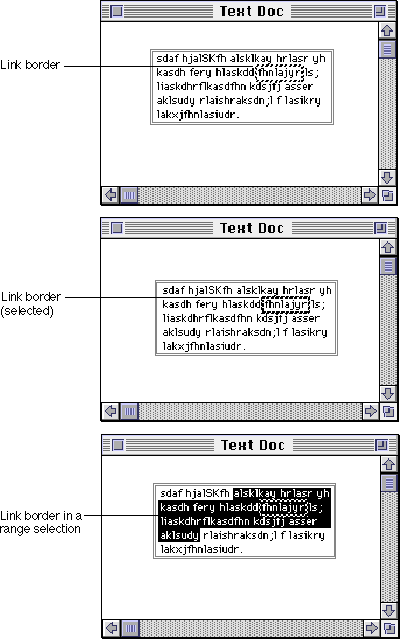
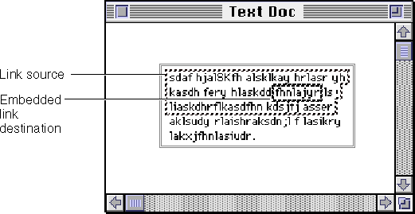
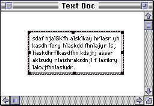

Using Links
With OpenDoc, the user can conveniently create links within a document or across documents. Links are live (updatable) copies of the same content that are displayed in more than one place. Linking is also useful to show different presentations of the same content, keeping it updated as the user changes the content. For example, a user might want to link data between a spreadsheet part and a chart part to display the data in two formats. This section describes the behavior of links. The basic appearance of link borders is shown in Figure 12-21.A link consists of source content, a copy of that content at the destination of the link, and a connection between them. As the source changes, the destination can be updated. Both intrinsic content and embedded parts may be linked. Links can exist within a single part, between two parts in a single document, or between parts in different documents. Figure 14-12 shows an example of data linked between a spreadsheet part and a chart part in a single document.
- Note
- A link is a one-way path for the flow of data. If you need to implement other kinds of communication between two parts, you should use the OpenDoc extension mechanism or semantic events to do so.

Each link destination can have only one link source. A single link source may serve multiple link destinations, but each link in that case is distinct. When the source of a link changes, all of its destinations can be updated. That updating can be either automatic or manual (specified by the user), depending on the update settings that the user has made in the Link Source Info dialog box (Figure 6-4 for more details.The user can create a link from any source part to any destination part that will receive the data. A destination may display the data in the same format as the source of the link, or it may display the data differently, as Figure 14-12 shows.
Creating and Deleting Links
To create a link, the user selects some content, copies it to the clipboard, and then chooses the Paste As command from the Edit menu (see the section "Edit Menu"The Paste As dialog box has a Paste with Link checkbox, enabled whenever both the source and destination parts support linking. If your part is the destination part that displays the Paste As dialog box, disable this checkbox if your part doesn't support linking.
If the user selects Paste with Link, the user can further specify, using the Get Updates radio buttons, whether updates to the link are to be automatic or manual.
Whether or not the user creates a link, your part either embeds or incorporates the pasted data, according to the normal use of the Paste As dialog box; see "Pasting With the Paste As Dialog Box"
There are three ways to delete a link:
The user can reverse the deletion of a link by choosing Undo in the Edit menu.
- When the user clicks the Break Link button in either the Link Source Info dialog box (Figure 6-4), the actual content of the source and destination does not change. However, subsequent changes to the source are no longer reflected in the destination, because the destination is now just ordinary (unlinked) content.
- If the user deletes the source of a link, any link destinations of that source no longer receive updates from the link source. The user can then break the link and edit the content at any of the destinations.
- If the user deletes the destination of a link, just the single link between it and the source is deleted. The source of the link does not change and may remain linked to other destinations.
Displaying Link Information
When the user selects a link within the active part (see "Showing Link Borders and Selecting Links"Selection Info command in the Document menu to Link Info. The user chooses this command to get information about the link. Depending on whether the user selects a link source or a link destination, the part editor displays the appropriate dialog box. The part editor is then responsible for performing the actions the user specifies with the dialog box.Figure 6-4Manually radio button, links are updated only when the user clicks the Update Now button. This dialog box also allows the user to break the link.
Figure 6-5 shows the Link Destination Info dialog box. This dialog box displays information about the destination of a link, such as its kind and dates of creation and updating. The Kind field displays the part kind that the user chose to embed or incorporate, not necessarily the best kind available. The Created field shows when the destination was created. The Updated field shows the date and time of the last source update used by the destination, not the time that the destination used it. This dialog box allows the user to
The Update Now button is disabled if the user clicks the Automatically radio button or if the destination has the latest update from the link source.
- specify when to receive updates from the source of the link
- break the link
- find the source of the link
Updating Links
The source part of a link controls updates. When the source changes, the destination is notified and can get the updated content from the link. The user determines the frequency of updating by making an initial setting in the Paste As dialog box and subsequently by setting the update radio buttons in the Link Source Info and Link Destination Info dialog boxes. By default, links are set to update automatically. If automatic updating is specified, link destinations in the same document as the link source are updated immediately, whereas link destinations in other documents are updated when the document is saved.When your part creates the source of a link, the initial setting is automatic updating. You should provide updated content to the link automatically whenever the content at the source changes (or at periodic intervals, if the content is changing rapidly). If the user subsequently changes the Send Updates setting in the Link Source Info dialog box to Manually, your part should provide updates to the link only on request (in response to the user pressing the Update Now button in the Link Source Info dialog box).
When your part creates the destination of a link, the user specifies (in the Paste As dialog box) the initial setting for updating the destination. If the user specifies automatic updates, you should update the destination data whenever you receive new content from the link. If the user specifies Manually, update only in response to the user pressing the Update Now button in the Link Destination Info dialog box. If the user subsequently changes the Send Updates setting in the Link Destination Info dialog box, your part should change its update behavior accordingly.
Update settings at a link source and link destination are independent. Different link destinations that are connected to the same source may have different update settings. Therefore, full automatic updating from source content to destination content can occur only if both the source and destination of a link are set to automatic updating.
- Translation of linked data
- If the user has specified that the data of a link is to be translated, the destination part must perform the translation each time the link is updated.

Editing Links
Because updating of links is unidirectional, the user can edit the source of a link, but not its destination. If the selection or insertion point is in a link destination in your part, you should probably disable the Cut, Paste, Paste As, and Clear menu commands. If the user drags content over a display frame of your part that is embedded in a link destination, don't display destination feedback.Your part editor can, however, allow users to change certain aspects of the display of a destination that you edit, such as its font, style, or other presentation. For example, if a bar chart is the destination of a link from a spreadsheet document, the part editor of the bar chart should allow the user to select one of the bars and change its color. You determine what properties your part allows the user to change.
If the user attempts to change the data in a link destination that you maintain--for instance, by attempting to add or delete data, or drag data from the destination--your part should display an alert box that notifies the user that changes in the destination of a link are not permitted and asks if the user wants to open the source of the link for editing. Figure 14-13 (top) shows an example of such an alert box.
The user may attempt to change data of your part that is within a link destination maintained by another part (such as your containing part or even its containing part). If OpenDoc cannot locate the part that maintains the link, you should display a dialog box such as that shown in Figure 14-13 (center). Do not allow editing.
A related but slightly different situation occurs when the user selects more than one link destination in your part and then attempts to edit the data. In that case, you should display a dialog box like that shown in Figure 14-13 (bottom). Do not allow editing.
Figure 14-13 Alert boxes presented when the user attempts to edit a link destination

Showing Link Borders and Selecting Links
To see where linked data exists, the user can display the borders of all linked content within a document. To do so, the user displays the Document Info dialog box (see Figure 11-14) and checks the Show Links checkbox.When the Show Links checkbox is selected, all link borders in the document become visible. Link borders have the appearance described in the section "Link Borders". Showing link borders does not change the selection state of any link. The disadvantage of showing link borders is that they obscure content at the inner edges of the linked areas. Many users will probably want to work with the borders turned off.
When a user selects content that contains a link or sets an insertion point inside a link, your part should display the link border to indicate where the link exists, even if the Show Links checkbox is off. If your part uses inverse video highlighting to indicate selection, also invert the link border so that it remains visible in the selection. If the highlight color is other than black, it must be light enough so that the black pixels in the link border are visible. If these pixels aren't visible, then invert the link border. Figure 14-14 shows a link border, a selected link border, and a link border within a selection.
Figure 14-14 A link border and selected link borders in text

Clicking a link border selects the link. When the link is selected, the Link Info command appears in the Edit menu in the place of the Selection Info command. By choosing the Link Info command, the user can get information about the selected link source or link destination. Selection of a link border clears any other selection.When a user selects a link in your part, display the selected link border around the entire linked content, as in the bottom window in Figure 14-14; use the pattern shown in Figure 12-21.
The user can nest links within a part. That is, a link source may contain a link destination or another link source. The same content may thus be included in the source of different links. Figure 14-15 shows a frame that is a link source. The part also contains a link destination. In this example, the link destination is selected but the link source is not.

When a user opens a part containing a link into a part window and displays link borders, you should place a link border around all of the visible linked content in the part window, including any content that is not visible in the source frame.When a single embedded part is the source or destination of a link, its frame needs to display both a selected appearance and a link border when it is selected. (See Figure 14-16.) In this case, display the selected link border outside of the selected frame border. This appearance provides feedback to the user that the entire part is a link.
Figure 14-16 A selected embedded frame that is also a link source or destination

Moving and Copying Links
When the user moves linked content, OpenDoc attempts to preserve the links when possible. This section summarizes how OpenDoc handles data transfer involving linked data; see also the section "Transfer Rules for Links and Link Sources" for tables that detail the actions summarized here.For links to be preserved, content must be moved within or to a part that supports linking. For example, if styled text that contains a link destination is copied to a plain-text part that does not support linking, it is likely that the plain-text part will copy a plain-text version of the transferred data to the destination but will not maintain the link.
For parts that support linking, these are the actions that can occur:
- If the user moves the source or destination of a link within a document, OpenDoc preserves the link.
- If the user moves the source and destination of a link together, OpenDoc preserves the link. (However, if the move is to a different document, the link is broken for any other destinations of the moved source that remain in the original document.)
- If the user moves only the source or the destination of a link to a different document, OpenDoc breaks the link.
- When the user cuts content that includes the source or destination of a link, OpenDoc places the link content on the clipboard. If the user then pastes the content, OpenDoc attempts to reconnect the link. If the user chooses to embed or merge a lower-fidelity representation of the data, the links are lost.
- Copying the source of a link does not alter the source or its links; they remain unchanged. The new copy initially has no links from it. The user can subsequently create links from the new copy, but these are independent of the original source and its links.
- The user can copy to the clipboard a link destination or a link source/link destination pair, but not a link source. It makes no sense to have multiple sources for a link.
- Copying both the source and destination of a link creates an entirely new link between the copy of the source and the copy of the destination. This link has no relationship to the original source or destination or any of their links.
- The user can create multiple links to the same link source in two ways:
- Copy the destination of a link to another location.
- Copy the source of a link, and use the Paste As command (specifying Paste with Link) to create a destination at another location. Since the Paste As command gives the user control over the kind, embedding, and appearance of the new link at the new destination, the same link source may appear quite differently at the different destinations.